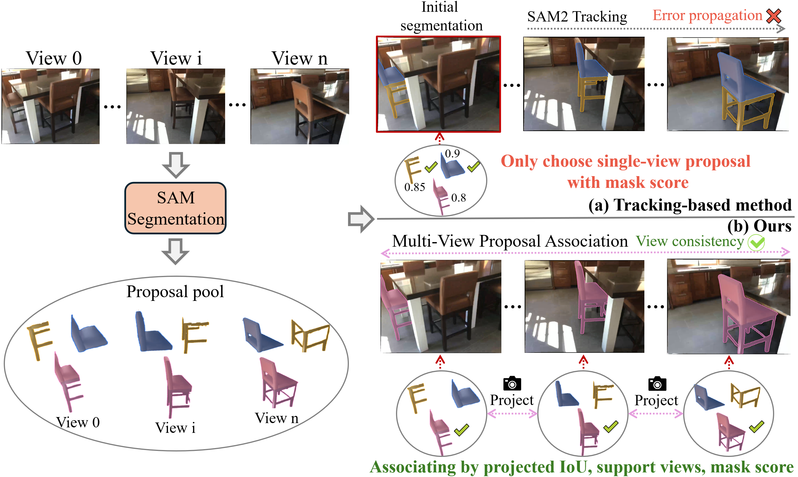
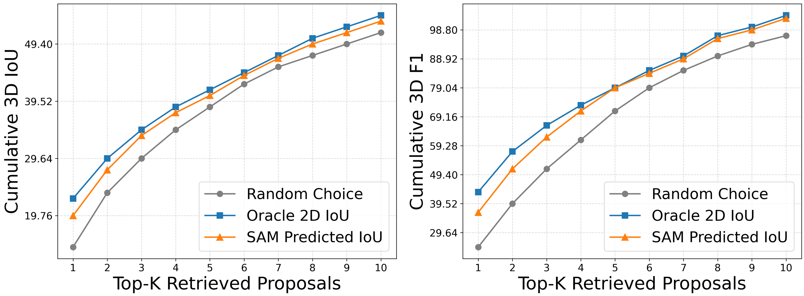
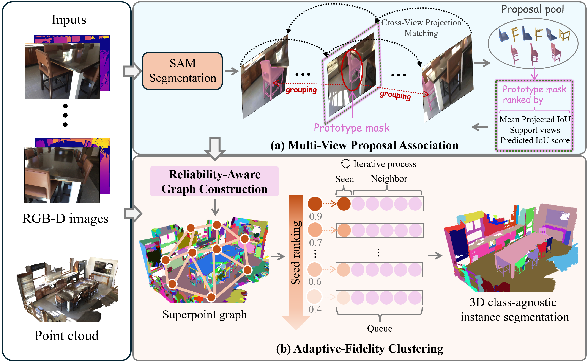
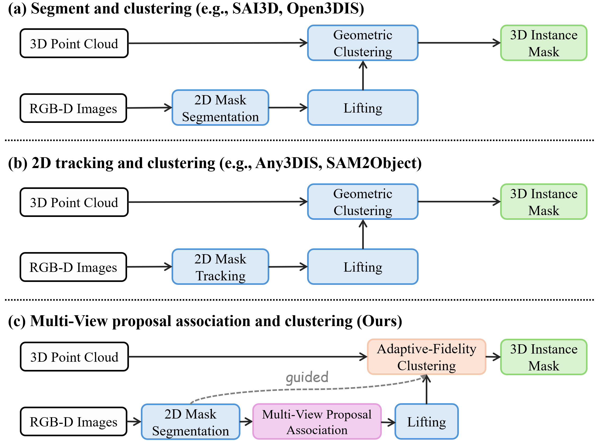
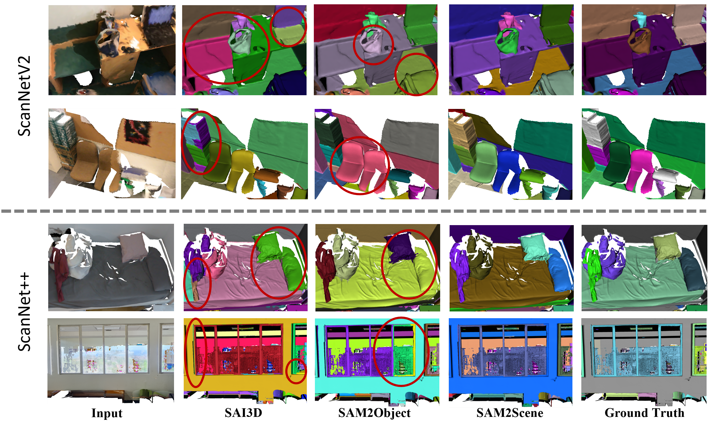
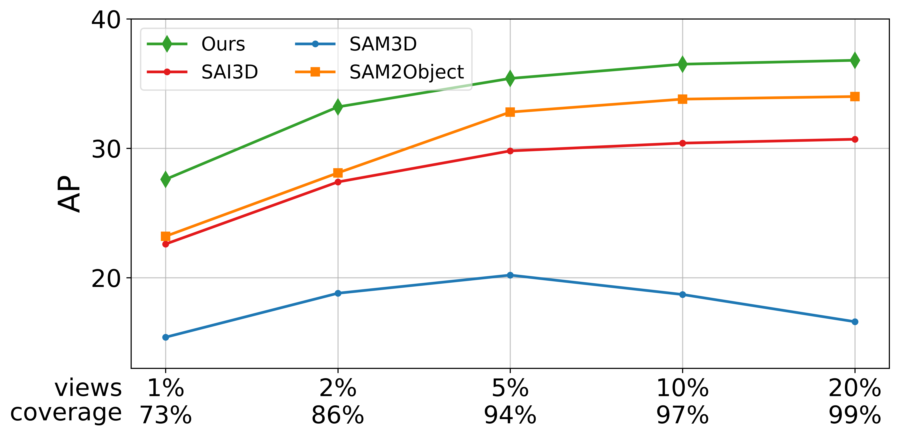

Multi-View Proposal Association
3D projection establishes cross-view matches. Support views, projected IoU, and predicted IoU jointly rank prototypes and form stable proposal groups without sequential drift.
University of Science and Technology Beijing

Recent zero-shot 3D instance segmentation methods lift multi-view 2D masks into point clouds, but tracking-based pipelines depend on a single initial mask and can accumulate errors across views.
We present SAM2Scene, a training-free framework that replaces sequential mask propagation with geometry-grounded multi-view proposal association. We further observe that SAM2's predicted IoU correlates with 3D mask quality. SAM2Scene turns this signal into an adaptive fidelity prior for graph construction and clustering, prioritizing reliable proposals to produce coherent 3D instances.
Ranking proposals by SAM2's predicted IoU retrieves substantially higher-quality 3D masks than random selection and closely tracks the oracle 2D IoU ranking.


3D projection establishes cross-view matches. Support views, projected IoU, and predicted IoU jointly rank prototypes and form stable proposal groups without sequential drift.
Reliability cues shape the superpoint graph, while fidelity-guided seed ranking and region growing allow high-quality clusters to expand first.
SAM2Scene combines the broad proposal coverage of per-view segmentation with stable cross-view identity and reliability-aware 3D clustering.

Across ScanNetV2, ScanNet200, and ScanNet++, SAM2Scene consistently improves over frame-by-frame lifting and tracking-based methods.

SAM2Scene remains consistently ahead across all view budgets. The advantage is especially clear when selected views fall from 5% to 2%, where tracking-based propagation degrades more sharply.

The bibliographic record can be updated here once the official ACM DOI is available.
@inproceedings{zhao2026sam2scene,
title = {SAM2Scene: SAM Knows How to Segment 3D Instances},
author = {Zhao, Jihuai and Zhuo, Junbao and Wang, Liyong and
Liu, Chang and Zou, Bochao and Chen, Jiansheng and Ma, Huimin},
booktitle = {Proceedings of the 34th ACM International Conference on Multimedia},
year = {2026}
}